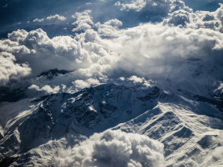
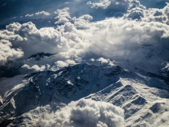

Путешествия по России
Настоящая страна не в выпусках новостей, а здесь

ваша полка — верхняя
Чего мы там не видели?
По опросам ВЦИОМ, 95% россиян мечтают куда-нибудь поехать, но только 36%
планируют
провести отпуск в родной стране. Мол, чего мы тут, дома, не видели? На самом деле, Россия — это
целая
вселенная с ласковым морем юга, густыми лесами Саян и суровыми льдами плато Путорана. А ещё увидеть
все
эти
красоты можно без миллионов на счету, загранпаспорта и многочасовых перелетов. Как, например, Вера
Башмакова
— смелая молодая мама, которая взяла в охапку троих детей, усадила их в свою «Ладу» и проехала 20
тысяч
километров по родной стране. Мы выбрали и описали некоторые интересные места, достойные вашего
отпуска.
-
Часовых поясов 11
-
Объектов природного наследия ЮНЕСКО 12
-
Объектов культурного наследия ЮНЕСКО 16
-
Природных заповедников 105
-
Аэропортов 241
Куршская коса

Здесь, посреди лесов и песчаных дюн, вы сможете увидеть два водных
горизонта — спокойного
Куршского залива с одной стороны и подёрнутого рябью волн Балтийского моря с другой.
Уникальная природная
зона на краю российского анклава.
На этом Калининградская область не заканчивается.
Для путешественника
и исследователя там же по соседству — самая западная точка России, Балтийская
коса, —
и немецкое наследие россыпи небольших приморских городов. Атмосфера здешних мест
исключает суету, окуная в спокойствие природы
и запах стального, прохладного моря.
Кольский

Почти весь полуостров находится за Полярным кругом. Саамская тундра, от
которой на юг —
тайга, а на север — Ледовитый океан, прикидывающийся Баренцевым морем.
Возможно, вы смотрели Звягинцева и даже слышали историю
арктического
фестиваля в Териберке. Возможно, слово «Хибины» не осталось под снегом школьных воспоминаний
об
уроках географии. Возможно, вы не интересовались пронизывающей земную кору сверхглубокой
скважиной, а от апатитов вас давно накрывает апатия. Но ваша мечта увидеть северное сияние
начинает сбываться с билетом
в Мурманск.
Алтай

Алтай — одно из красивейших мест в России.
В первую очередь из-за гор: если ехать вдоль хребта, вы увидите склоны, усыпанные соснами,
горные реки и озёра. А если вы откроете в автомобиле окна, сможете познакомиться с невидимым
чудом здешних мест — горным воздухом.
Климат на Алтае умеренный, поэтому ехать сюда лучше всего летом.
Так вы
увидите всё разнообразие местной флоры и фауны. По лесам Алтая бродят лоси, над хребтами
летают
орлы, а на равнинах пасутся косули. И знаменитые манулы — тоже обитатели Алтайского края.
Зимний Байкал

Всем известен Байкал как крупнейшее озеро
в мире. Многие также знают, что это самый большой источник пресной воды и одно из
красивейших
мест в России.
Конечно, это всё так. Но Байкал ещё идеальное место для соревнований
по скийорингу. Это такой вид спорта, когда лыжник привязывает себя
к мотоциклу, и тандем старается развить как можно бóльшую скорость
на льду. В марте 2019 года на фестивале «Байкальская миля» был поставлен
мировой рекорд — 197.011 км/ч.
Карелия

Сибирь заканчивается не на Урале, а в Карелии: образующая тайгу
сибирская лиственница не растёт западнее Водлозера. Зато здесь она вымахивает на 30 метров —
леса карельских национальных парков из-за непроходимых болот никогда не знали топора.
Некоторым
соснам уже больше чем полтысячелетия. Прикоснитесь к живому существу, видевшему солнце
раньше,
чем увидал его Иван Грозный.
В девственном лесу на сотню километров не встретишь тропы. А на редких тропинках деревья
в паре метров от земли помечены медвежьими когтями. Чтобы все знали, кто тут хозяин.
 
